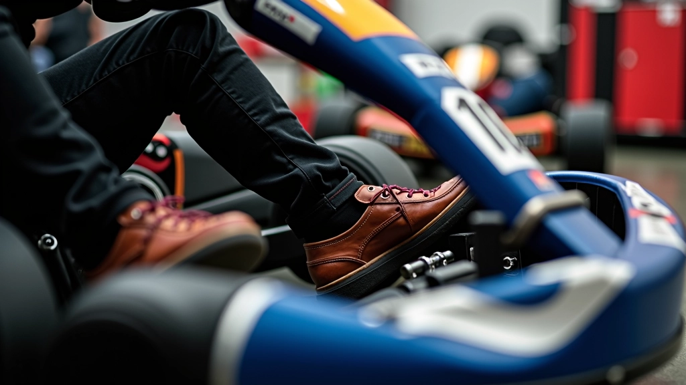
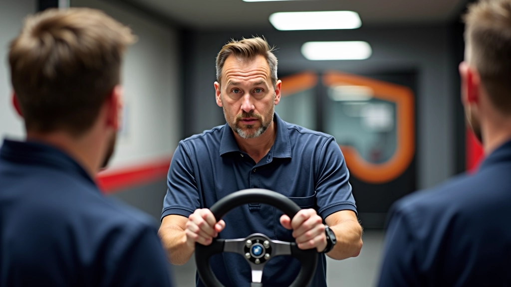

تقنيات متقدمة للسباقات التنافسية
استراتيجيات احترافية لكسب ميزة في الانطلاقة وتحقيق أفضل موقع في المنحنى الأول. تعلم كيف يتفوق السائقون المتقدمون على المنافسة من اللحظة الأولى.


فريق تقنيات الانطلاق التحريري
فريق المراجعة التحريري
كتبه فريق تقنيات الانطلاق التحريري، المتخصص في شروحات عملية وسهلة المتابعة.
فهم النقاط الحرجة في الانطلاقة
الانطلاقة الحادة تبدأ قبل إضاءة الضوء الأخضر بقليل. السائقون المتقدمون يعرفون بالضبط متى يبدأون الضغط على البدال — عادة ما يكون بين 80 إلى 100 ملليثانية قبل الإشارة. هذا التوقيت يعني الفرق بين الفوز والخسارة.
الشيء المهم: ليس الأسرع هو الأفضل. الأسرع الذي لا يفقد السيطرة على السيارة هو الأفضل. تحتاج إلى إيجاد التوازن بين الشراسة والدقة.
المعادلة الذهبية
ردة فعل سريعة + ضغط متدرج على الدواسة + إدارة توازن السيارة = انطلاقة احترافية. كل عنصر مهم بنفس القدر.
التحضير الذهني والجسدي
قبل الانطلاق بدقائق، تحتاج إلى أن تكون في حالة تركيز عميق. لا تفكر في المنافسين أو الضغط. ركز على ثلاثة أشياء فقط: موقع قدميك، إحساسك بالسيارة، وإيقاع النبضات في جسدك.
الجسد يحتاج إلى تحضير فعلي أيضاً. استرخ عضلاتك قبل الدخول إلى الكارت. افرك ذراعيك وسيقانك برفق. تنفس بعمق ثلاث مرات. هذا يقلل التوتر ويحسن ردات الفعل.
ملاحظة مهمة
هذه الإرشادات تعتمد على خبرات سائقين متقدمين وتحليل فني. كل سائق لديه أسلوبه الخاص وكل مسار له خصائصه. جرّب هذه التقنيات في التدريب أولاً قبل استخدامها في السباقات الفعلية.

تقنية وضع القدمين والأصابع
موضع قدميك على الدوّاسات يحدد كل شيء. قدمك اليمنى يجب أن تكون على البدّال بحيث تلمس القاعدة برفق قبل الانطلاق. أصابع قدمك على الجزء العلوي من البدّال، ليس في الوسط.
عندما تسمع الإشارة، اضغط بحوالي 70% من قوتك في الربع الثاني الأول. ثم زد الضغط تدريجياً على مدى الثانية الأولى. هذا يعطي السيارة قوة بدون أن تفقد التوازن.
التحكم في السيارة والانزلاق
أكثر سائقين يفقدون الفوز لأنهم يضغطون بقوة كبيرة جداً على الدواسة ويفقدون السيطرة. السيارة تنزلق أو تنقلب قليلاً. هذا يبطئك بشكل كبير جداً.
الحل: استخدم عجلة القيادة لمساعدتك. أثناء الضغط على البدّال، أمسك العجلة بقوة ولكن مع حركات صغيرة تصحيحية. إذا شعرت بأن الخلف ينزلق قليلاً لليمين، حرك العجلة قليلاً لليسار. الحركات الصغيرة، ليس الكبيرة.

نصائح عملية تطبقها مباشرة
-
1
الممارسة بنفس الظروف
مارس الانطلاقة في نفس وقت اليوم والظروف المناخية التي ستسباق فيها. درجة الحرارة والرطوبة تؤثر على التماس الإطارات.
-
2
سجل محاولاتك
احفظ فيديو لانطلاقاتك وراجعها. ستجد الأخطاء الصغيرة التي لا تلاحظها أثناء السباق.
-
3
اختبر الإطارات
إطارات جديدة تتصرف بشكل مختلف عن الإطارات المستعملة. تعود على الفرق قبل السباق المهم.
قراءة خصم المسار والسائقين
السائق المتقدم يعرف كيف ينطلق ليس فقط بناءً على قدرته، بل أيضاً بناءً على منافسيه. هل السائق بجانبك معروف بأنه بطيء في الانطلاقة؟ يمكنك أن تكون أكثر عدوانية قليلاً.
انظر أيضاً إلى المسار نفسه. هل هناك ميل في خط البداية؟ هل السطح ملساء أم خشن؟ هذا يؤثر على كيفية انطلاقك. مسار ملس يعني عليك أن تكون أكثر حذراً من الانزلاق.
الفارق بين الفائز والثاني لا يكون دائماً على المسار نفسه — غالباً ما يكون في الثواني الأولى من الانطلاقة. هذا حيث يتعلم الجميع من يحترف الرياضة ومن يلعبها فقط.
خلاصة: التفوق يبدأ من الانطلاقة
تقنيات الانطلاقة المتقدمة ليست سحراً. هي مزيج من التحضير الذهني والجسدي الجيد والممارسة المكثفة والفهم العميق لسيارتك والمسار. كل عنصر مهم.
ابدأ بالأساسيات. أتقن موضع قدميك وإيقاع ضغطك على البدّال. ثم أضف التحكم الدقيق في العجلة. مع الوقت والممارسة، ستصبح الانطلاقة سريعة احترافية جزءاً طبيعياً من سباقك.